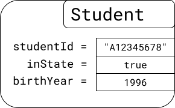
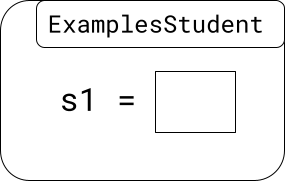
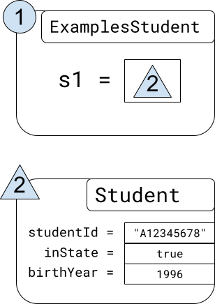
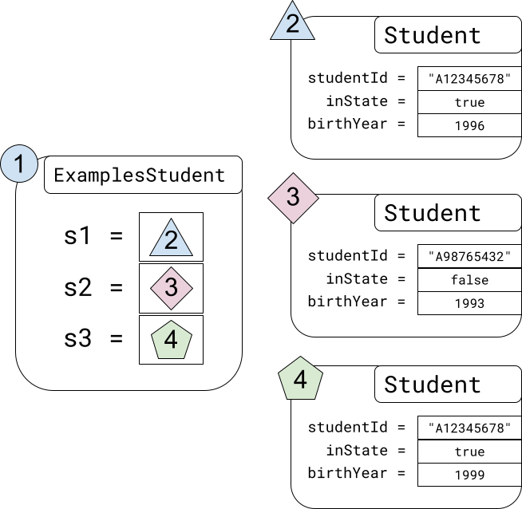
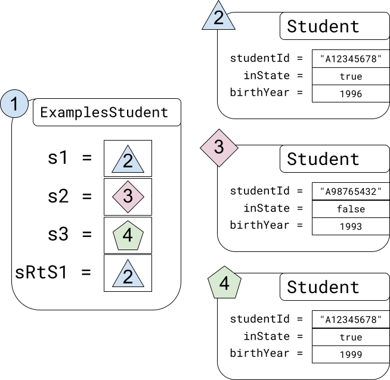

5.1 — Representing Compound Data
So far, we’ve seen several kinds of data:
- Numbers, represented in Java as
ints anddoubles - Sequences of characters, represented in Java as
Strings - Yes/no answers, represented in Java as
booleans
But there are many more kinds of information in the world than just these simple datatypes. Here are a few real-world examples:
- A record of student information can’t be represented as just a single string, or a number, or a boolean. Rather, it’s several pieces of related data, each of which might individually be one of these types: a
booleanfor whether the student is from within the state or not, aStringfor the student ID and username, anintfor birth year, and so on. Each of these pieces of information means little on its own, but when put together, they fully describe a student record that might be saved in a database. - In the context of math and graphing, we often talk about points, which (in two dimensions), aren’t represented as single numbers, but as pairs of numbers. A point is defined as having an x- and y-coordinate, and from the perspective of defining a point, both are necessary.
- A song in a music playlist (like in iTunes or Spotify), has a number of fields for data: the title (a
String), the length of the song in seconds (anint), the file the song data is stored in (aString), and album and artist information. The album information might be a compound of other data as well, like the year it was released and the title.
In Java, we use classes to represent these shapes of compound data. A class for a simple student record might look like this:
class Student {
String studentID;
boolean inState;
int birthYear;
Student(String studentID, boolean inState, int birthYear) {
this.studentID = studentID;
this.inState = inState;
this.birthYear = birthYear;
}
}We can use the class to create sets of data that describe several different students. To test it out, we can put the Student class definition above into the same file as an Examples class. Then, in the Examples class, we define several examples using the new operator (which we haven’t seen before):
Do Now! How many times does the word new appear in the output of the above program? Enter the correct answer in the box below.
//code from before, for reference
class Student {
String studentID;
boolean inState;
int birthYear;
Student(String studentID, boolean inState, int birthYear) {
this.studentID = studentID;
this.inState = inState;
this.birthYear = birthYear;
}
}
class ExamplesStudent {
Student s1 = new Student("A12345678", true, 1996);
Student s2 = new Student("A98765432", false, 1993);
Student s3 = new Student("A18273645", true, 1999);
}There are several parts of this program that are new to us.
First, in the class definition for Student, the first three lines are as follows:
String studentID;
boolean inState;
int birthYear;These look like field definitions, but they are missing the part with the equals sign and the value. We call these uninitialized field definitions, and this is actually the most common variety of field definition we’ll see in the course. We’ll see shortly why they don’t have specific values associated with their definitions.
//code from before, for reference
class Student {
String studentID;
boolean inState;
int birthYear;
Student(String studentID, boolean inState, int birthYear) {
this.studentID = studentID;
this.inState = inState;
this.birthYear = birthYear;
}
}
class ExamplesStudent {
Student s1 = new Student("A12345678", true, 1996);
Student s2 = new Student("A98765432", false, 1993);
Student s3 = new Student("A18273645", true, 1999);
}Second, the class definition for Student also has this block of code:
Student(String studentID, boolean inState, int birthYear) {
this.studentID = studentID;
this.inState = inState;
this.birthYear = birthYear;
}At first glance, this looks like a method — it has the name Student, a list of parameters, and what looks like a method body. Remember, though, that a method header has two components before the parameter list: a return type and a method name.
Instead of having both of those components, however, here we only have the name Student before the parameters. This block of code is not a method definition (though it is related). We call this block of code a constructor. A constructor starts with the name of the class that it is in (in this case, Student). Then, it has a list of parameters and a constructor body. For now, we won’t go into detail about what this method body does. We’re just going to observe that the parameters match the names of the fields that were defined earlier in the class, and that there is a line in the method body for each field that looks like this.fieldName = fieldName. In each class that we write for the next few lectures, we’ll write a constructor that follows this pattern.
Do Now! Select all the options below that are names of parameters in the constructor.
//code from before, for reference
class Student {
String studentID;
boolean inState;
int birthYear;
Student(String studentID, boolean inState, int birthYear) {
this.studentID = studentID;
this.inState = inState;
this.birthYear = birthYear;
}
}
class ExamplesStudent {
Student s1 = new Student("A12345678", true, 1996);
Student s2 = new Student("A98765432", false, 1993);
Student s3 = new Student("A18273645", true, 1999);
}Third, to the left of the = operators in the ExamplesStudent class, we use Student in the position where we have previously written types like int or boolean. Just like how the keyword int refers to the set of integers, the name of a class also refers to a distinct set of values. A field with a class type, like Student, can only hold references to objects of that type. We’ll define objects and references in the next step.
Fourth, to the right of the = operators in the ExamplesStudent class, we use the new operator like so:
Student s1 = new Student("A12345678", true, 1996);A new expression consists of the keyword new, followed by the name of a class (in this case Student), followed by arguments in parentheses. These arguments must match the order and types of the parameters in the class constructor. Here, we have the String value "A12345678" for studentID, the boolean value true for inState, and the int value 1996 for birthYear.
This new expression packages up these three pieces of data into what we call an object, or instance, of the class that appears after new. In this case, that class is Student. To understand what an object is, we can first refer to a fragment of what the tester library printed out:
new Student:2(
this.studentID = "A12345678"
this.inState = true
this.birthYear = 1996)From this output, we can conclude that objects are collections of fields, which each have a particular value and are collectively labeled with the class that was used to construct them. The particular object above has class Student and the given values in its fields.
Do Now! According to this part of the output, how many fields does the Student class contain?
We can also represent objects through pictures. As we will demonstrate in this course, the ability to draw pictorial representations of objects is a useful skill that will allow us to work through the relationships between different values and objects. For example, the object created and stored in the field s1 can be represented like this:

A representation of the s1 instance of the Student class
The Student in the top right is the name of the object’s class, and the three fields’ values are listed in boxes within the class.
With that, we have covered the four new pieces of syntax:
- uninitialized field definitions
- constructors
- class names as types
- the
newoperator
All of this also helps us understand the behind-the-scenes work that happens when printing out the values of the ExamplesStudent class.
In the printed output, we can see that the field s1 is shown to be holding the entirety of the Student object, containing all three fields:
new ExamplesStudent:1(
this.s1 =
new Student:2(
this.studentID = "A12345678"
this.inState = true
this.birthYear = 1996)
...One interesting thing to note here is that the Student object that was created is printed in the same style as the ExamplesStudent printing, which itself contains new, the name of the class, and all the fields’ values formatted as this.fieldName = fieldValue. This immediately suggests what’s going on when we run this program: an ExamplesStudent object is created, and it and all of its fields are printed! In fact, this is exactly what happens behind the scenes when we use ./run: the infrastructure for the course simply uses new on the ExamplesStudent class and prints out the resulting value, nicely formatted.
Let’s try to apply our pictorial representation idea to the fully-constructed ExamplesStudent object on the previous step, focusing first on just the field s1. Based on the earlier picture, we can assume that the picture for the ExamplesStudent object will look something like this:

We just need to understand what goes in the box for s1. We could try to complete this visual by putting the entirety of our representation of s1 in the box. But we’re not going to do that, because it’s not an accurate model of how these objects are laid out in the running Java program. Instead, here’s the actually-accurate picture of this situation:

We say that s1 contains a reference to the object. The program always ends up acting on references to objects, never the objects themselves. We’ll use small, distinctly colored shapes to represent these references. The shape in the top-left corner of an object serves to identify it, so when we see a reference in another field (or used as a parameter), we’ll know which object it is referring to.
As you might have noticed, the numbers 1 and 2 in the references are the same numbers that appear after the colons in the printout:
--------here!
|
v
new ExamplesStudent:1(
this.s1 =
new Student:2( <------------------and here!
this.studentID = "A12345678"
this.inState = true
this.birthYear = 1996)
...The tester library keeps a count of created objects, and labels each object in sequence with the order it was created in. This helps us distinguish objects in the printout. The full printout was as follows:
ExamplesStudent:
---------------
new ExamplesStudent:1(
this.s1 =
new Student:2(
this.studentID = "A12345678"
this.inState = true
this.birthYear = 1996)
this.s2 =
new Student:3(
this.studentID = "A98765432"
this.inState = false
this.birthYear = 1993)
this.s3 =
new Student:4(
this.studentID = "A18273645"
this.inState = true
this.birthYear = 1999))Which corresponds to this picture:

Do Now! According to the output and to the image that corresponds to the output, how many distinct objects are created in the program?
We can see this notion of a numbered reference play out if we create a field that uses a value from an existing object:
class ExamplesStudent {
Student s1 = new Student("A12345678", false, 1996);
Student s2 = new Student("A98765432", true, 1993);
Student s3 = new Student("A18273645", true, 1999);
Student sReferToS1 = s1;
}When this is printed, we get the printout below (excluding the line added for emphasis). Java doesn’t copy the object; it just keeps track of another reference to it.
ExamplesStudent:
---------------
new ExamplesStudent:1(
this.s1 =
new Student:2( <------------------------
this.studentID = "A12345678" |
this.inState = false |
this.birthYear = 1996) |
this.s2 = |
new Student:3( |
this.studentID = "A98765432" |
this.inState = true |
this.birthYear = 1993) refers back to
this.s3 = |
new Student:4( |
this.studentID = "A18273645" |
this.inState = true |
this.birthYear = 1999) |
this.sReferToS1 = Student:2) ------------What happens is that we copy the reference to the first object that was created and store the copied reference in the sReferToS1 field. Here it is in picture form:
